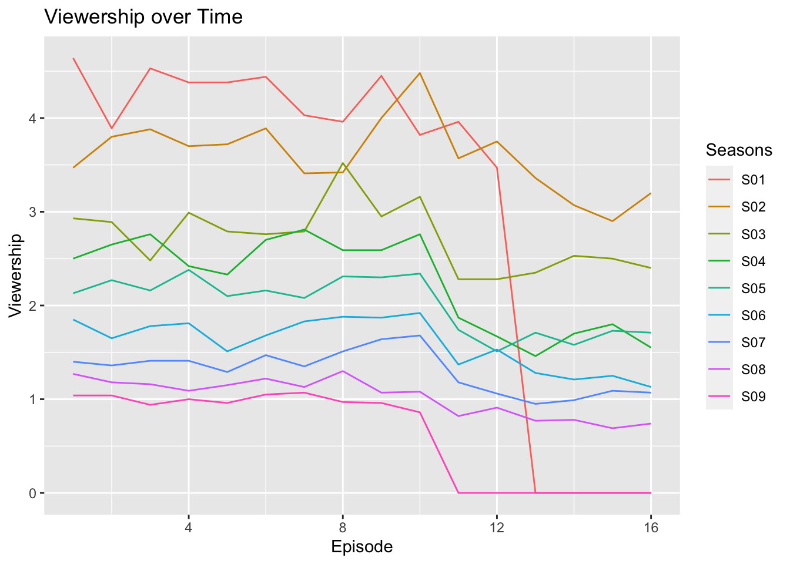
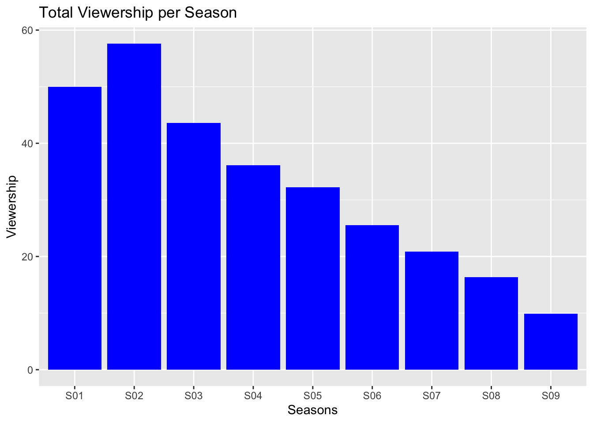

1. A brief description of the show (use italics for names).
Suits is an American television drama series created by Aaron Korsh, which premiered on June 23, 2011 on the USA Network. It revolves around Mike Ross (Patrick J. Adams), who begins working as a law associate for Harvey Specter (Gabriel Macht), despite never attending law school. The show focuses on Harvey and Mike managing to close cases, while maintaining Mike’s secret.
The series was renewed for an eighth season on January 30, 2018. In January 2019, the series was renewed for a ninth and final season which premiered on July 17, 2019. During the course of the series, 134 episodes of Suits aired over nine seasons, between June 23, 2011, and September 25, 2019.
2. A photo with the logo or a shot from the show itself.
The logo of Suits
3. A summary of some basic statistics (e.g. on viewership or ratings).
According to [wikipedia：List of Suits episodes]<https://en.wikipedia.org/wiki/List_of_Suits_episodes>，the viewership data of the TV series is shown in the following table(Viewers (in millions))：
```{r}# 4. Draw a graph of the viewership over time.#install.packages("dplyr")library(ggplot2)suits_df_long <- tidyr::pivot_longer(suits_df, cols =-Seasons, names_to ="Episode", values_to ="Viewership")suits_df_long$Episode <-gsub("E", "", suits_df_long$Episode)suits_df_long$Episode <-as.numeric(suits_df_long$Episode)ggplot(suits_df_long, aes(x = Episode, y = Viewership, group = Seasons, color = Seasons)) +geom_line() +ggtitle("Viewership over Time")```

5. A graph of the episode-to-episode (or season-to-season) changes in viewership.
```{r}# 3. Draw a bar plot of the total viewership for each season# 计算每一季的总观看人数seasons_df <-data.frame(Seasons =unique(suits_df$Seasons),Viewership =apply(suits_df[,-1], 1, sum))# 绘制柱状图ggplot(seasons_df, aes(x = Seasons, y = Viewership)) +geom_col(fill ="blue") +ggtitle("Total Viewership per Season")```

6. A short description of the observed changes that includes inline references to numbers (e.g. the viewership decreased by insert_calculated_number between seasons 3 and 5).
The TV series Suits has 9 seasons and a total of 134 episodes, with a cumulative view count of about 189.63 million. The overall ratings of the series have been declining, and the highest-rated episode is the first episode of the first season, “Pilot,” with a viewing count of approximately 4.64 million.The second season of Suits had the highest total viewership of about 57.62 million, while the ninth season had the lowest total viewership of only 9.89 million veiewers.
7. Make sure your report looks nice -> this time we’re mostly interested in the output and not necessarily the codes used to achieve it.
8. render your report and save it in the relevant folder of your repo.